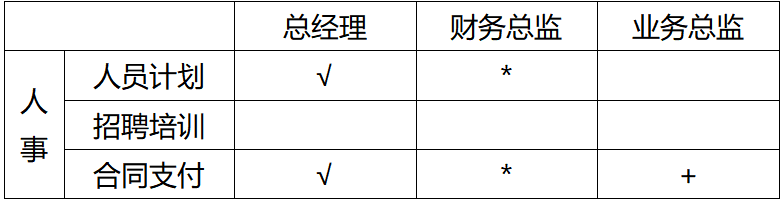
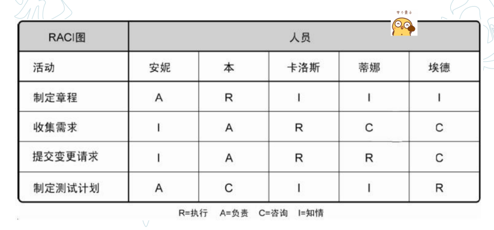

工具方法汇总
信息系统规划工具
- PERT图/甘特图-用于制定规划项目计划
- 调查表/调查提纲-用于访谈
- 会谈/正式会议-在确定各部门、各层管理人员的需求时，在梳理流程时，可以采用会谈和正式会议的方法
-
P/O(Process/Orgnization)矩阵-为把企业组织结构与企业过程联系起来，说明每个过程与组织的联系，指出过程决策人，可以采用建立过程／组织（P/O）矩阵的方法。

说明：“√”代表负责和决策，“*”代表过程主要涉及，“+”代表过程有涉及，空白代表过程不涉及
-
R/D(Resource/Data)矩阵-为定义数据类，在调查研究和访谈的基础上，可以采用实体法归纳出数据类。实体法首先列出企业资源，再列出一个资源／数据（R/D）矩阵。
-
IPO(Input-Processing-Output)图-功能法也称为过程法，它利用所识别的企业过程，分析每个过程的输入数据类和输出数据类，与R/D矩阵进行比较并调整，最后归纳出系统的数据类。功能法可以用输入—加工—输出（IPO）图表示。
-
C/U(Create/User)矩阵-为反映数据类型和企业过程之间的关系，一般采用C/U矩阵。企业过程和数据类定义好后，以企业过程为行，以数据类为列，按照企业过程生成数据类关系填写C（Create），使用数据类关系填写U（User），形成C/U矩阵。
需求分析
- E-R图-实体联系图，表示数据模型
- DFD图-数据流图，表示功能模型
- STD图-状态转换图，表示行为模型
责任分配矩阵(RAM/RACI)
- 是用来显示分配给每个工作包的项目资源的表格
- 显示工作包或活动与项目团队成员之间的关系
